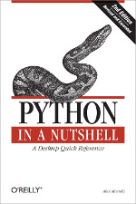

Previous Chapter: Rapid GUI Programming with Python and Qt
Python in a Nutshell
The Blurb
 This book offers Python programmers one place to look when they need help remembering or deciphering the syntax of this open source language and its many powerful but scantily documented modules. This comprehensive reference guide makes it easy to look up the most frequently needed information -- not just about the Python language itself, but also the most frequently used parts of the standard library and the most important third-party extensions.Ask any Python aficionado and you'll hear that Python programmers have it all: an elegant object-oriented language with readable and maintainable syntax, that allows for easy integration with components in C, C++, Java, or C#, and an enormous collection of precoded standard library and third-party extension modules. Moreover, Python is easy to learn, yet powerful enough to take on the most ambitious programming challenges. But what Python programmers used to lack is a concise andclear reference resource, with the appropriate measure of guidance in how best to use Python's great power. Python in a Nutshell fills this need.
Python in a Nutshell, Second Edition covers more than the language itself; it also deals with the most frequently used parts of the standard library, and the most popular and important third party extensions. Revised and expanded for Python 2.5, this book now contains the gory details of Python's new subprocess module and breaking news about Microsoft's new IronPython project. Our "Nutshell" format fits Python perfectly by presenting the highlights of the most important modules and functions in its standard library, which cover over 90% of your practical programming needs. This book includes:
- A fast-paced tutorial on the syntax of the Python language
- An explanation of object-oriented programming in Python
- Coverage of iterators, generators, exceptions, modules,packages, strings, and regular expressions
- A quick reference for Python's built-in types and functionsand key modules
- Reference material on important third-party extensions,such as Numeric and Tkinter
- Information about extending and embedding Python
Details
Title: Python in a Nutshell, 2nd EditionBy: Alex Martelli
Publisher: O'Reilly Media
Formats: Print, Ebook, Safari Books Online
Print: July 2006
Ebook: June 2009
Pages: 736
Print ISBN: 978-0-596-10046-9
ISBN 10: 0-596-10046-9
Ebook ISBN: 978-0-596-10566-2
ISBN 10: 0-596-10566-5